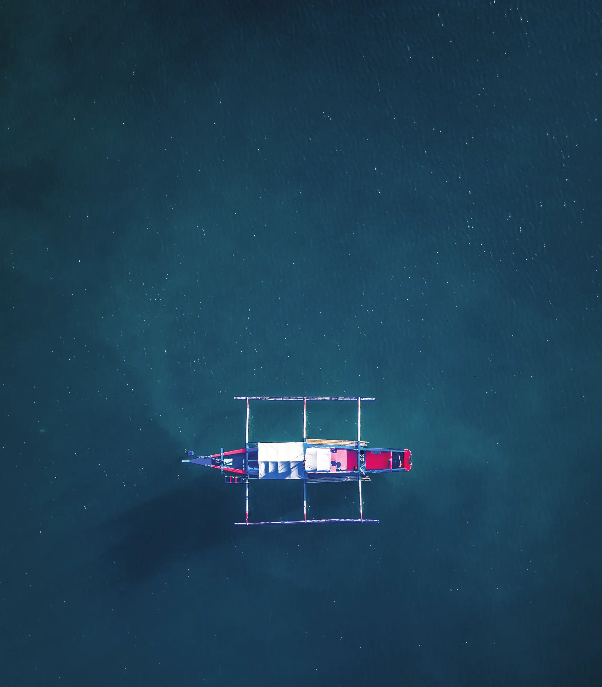
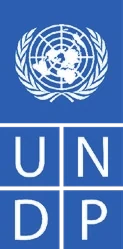
Progress report, September 2023
Rising up forsmall islanddeveloping states
On the implementation of the UNDP SIDS Offer
In the context of the sunset of the SAMOA Pathway and the establishment of a new pathway for the next decade of development in SIDS in 2024, this report analyses recent progress and development priorities in SIDS for the coming years, offering cross-cutting recommendations informed by a survey distributed to UNDP country and multi-country offices (CO/MCOs) with responses covering 41 SIDS across three geographical regions: the Caribbean, the Pacific, and the Atlantic, Indian Ocean and South China Sea. The survey explored national and regional progress and priorities across the pillars of development in SIDS, with special consideration for the context of recovery from the socioeconomic challenges triggered by the COVID-19 pandemic and the multidimensional crises caused by global climate change.
The United Nations Development Programme works with Small Island Developing States (SIDS) to advance their national development priorities, respond to diverse challenges, and capitalize on emerging opportunities, including a strong presence with a network of 6 multi- country offices and 15 stand-alone country offices that reach 50 SIDS. UNDP has responded to the needs of SIDS in several ways through key pillars that can kickstart green and blue recovery and accelerate sustainable development.
UNDP’s integrated SIDS Offer Rising Up for SIDS articulates a clear strategy to respond to their most pressing needs as well as bring forth innovative solutions to the complex developmental challenges they face for a better future for people and planet. The SIDS Offer acts as a vehicle for recovery to enhance support in climate action, blue economy and digital transformation, with innovative development finance as an enabling cross-cutting area.
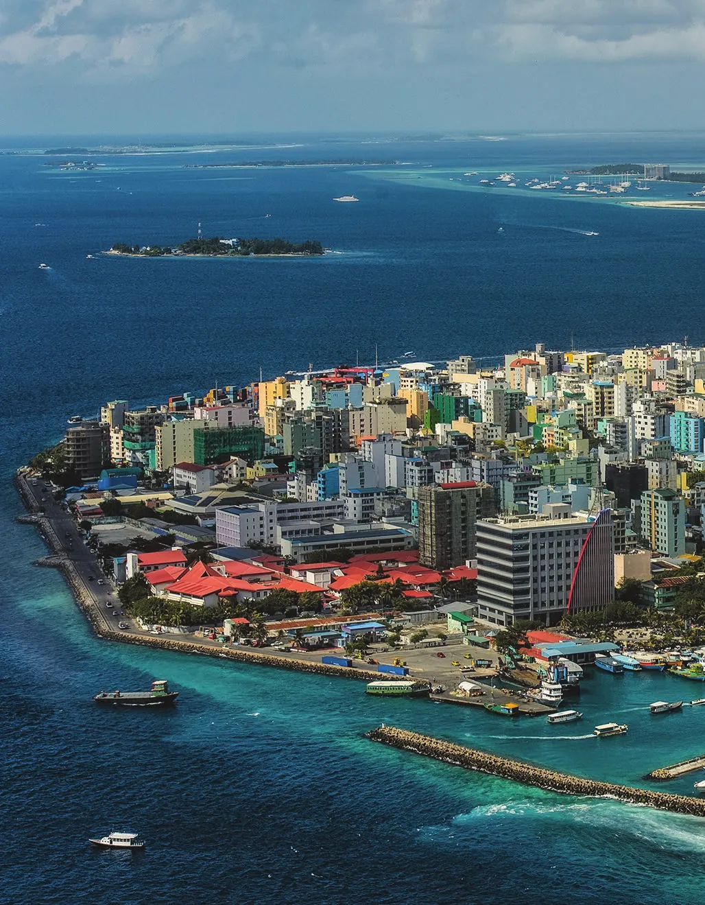
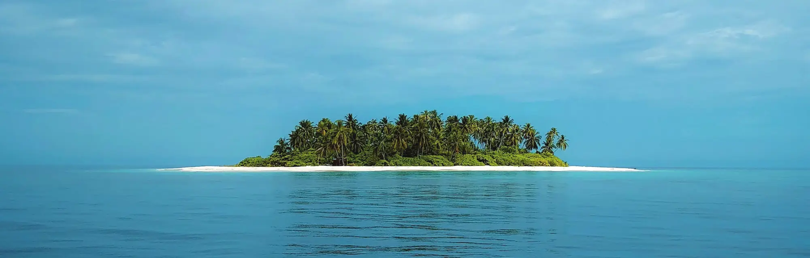
SIDS: turning challengesinto opportunities
The distinct characteristics of Small Island Developing States (SIDS) render them a special case for sustainable development, as recognized by the United Nations.
With diverse development trajectories, they are also bound by certain commonalities. Significant natural assets, unique indigenous knowledge, younger populations and agile governance can help SIDS develop sustainably and manage their natural environment productively and equitably. They possess strong potential for innovation to build forward better, greener and bluer.
SIDS also encounter similar structural constraints, such as a lack of economic diversification and insufficient social protection and inclusion. Fiscal limitations can be acute; they contend with heavy indebtedness and barriers to full integration in the global economy. Among the world’s most climate vulnerable countries, SIDS feel intimately and urgently the consequences of intensified extreme weather events, rising seas and ocean acidification.
As SIDS conclude 10 years of the SAMOA Pathway and prepare for the 2024 Fourth International Conference on SIDS, their collective commitment to sustainability and global action provide scope to identify new development pathways leading to real and lasting impacts. Their insights and experiences in transforming challenges into opportunities are more important than ever with increasing global uncertainty and planetary pressures.
How UNDP isrising up for SIDS
UNDP has wide-ranging, longstanding partnerships with SIDS aimed at advancing their development priorities by responding to a variety of challenges and seizing emerging opportunities. Rising Up for SIDS is UNDP’s SIDS Offer. It features three interconnected pillars, climate action, the blue economy and digital transformation, as well as a cross-pillar focus. Three cross-cutting enablers comprise innovative development finance, data and partnerships.
Climate action
SIDS are on the front lines of climate change, and are leading global discourse and solutions on climate adaptation and resilience.
Read the climate chapterBlue economy
For islanders, the ocean is arguably their most valuable asset. As ‘large ocean States’, SIDS have tremendous potential for blue economies.
Read the blue economy chapterDigital transformation
SIDS could advance as frontrunners in using digital to speed sustainable development, build economies of scale and mitigate complex challenges.
Read the digital chapterThree interconnected pillars
With innovative finance as a central cross-cutting enabler. Each pillar links to the others to advance simultaneously on multiple SDGs.
Read about the enablersThe SIDS Offer outlines a clear strategy to respond to complex development concerns — and accelerate forward momentum. Each pillar links to the others to advance simultaneously on multiple SDGs. UNDP provides responsive, rapid technical assistance, resource mobilization and policy support, towards demonstrating how innovation and new development approaches can emerge at the intersections of digital technology, blue economies and climate action.
Climate Action, Blue Economy, Access to energy, and Digital transformation are priority thematic areas identified by COs/MCOs for further expansion over the next five years.
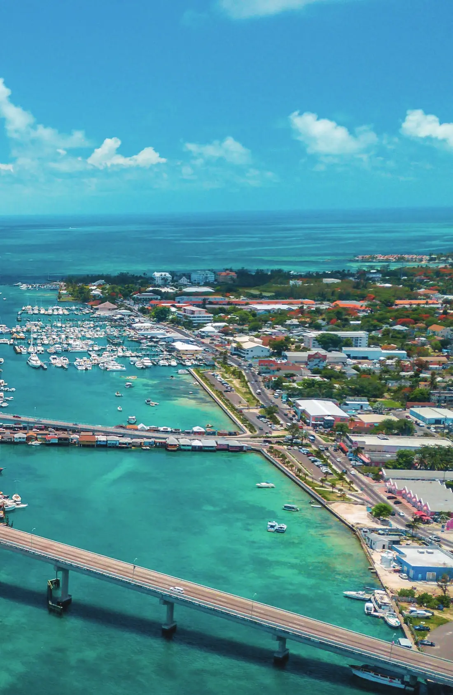
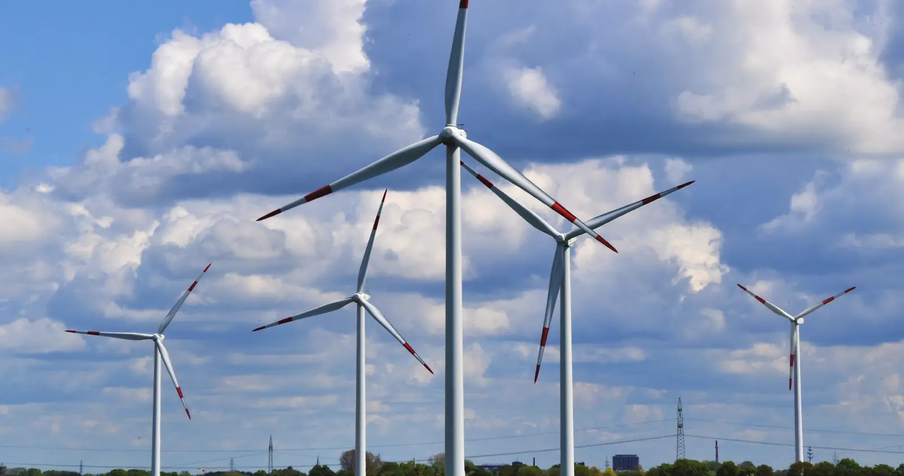
UNDP country offices and multi-country offices
UNDP has impact through projects and policy through its network of 6 multi-country offices (MCOs) and 15 country offices (COs) that reach 50 SIDS.
Multi-country offices
Country offices
Island outlines from the report’s map, not to scale. AIS: Atlantic, Indian Ocean and South China Sea.
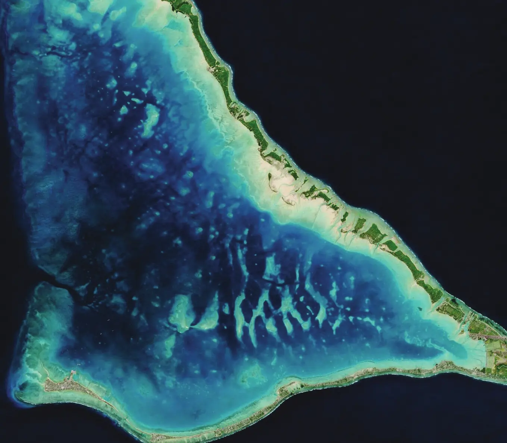
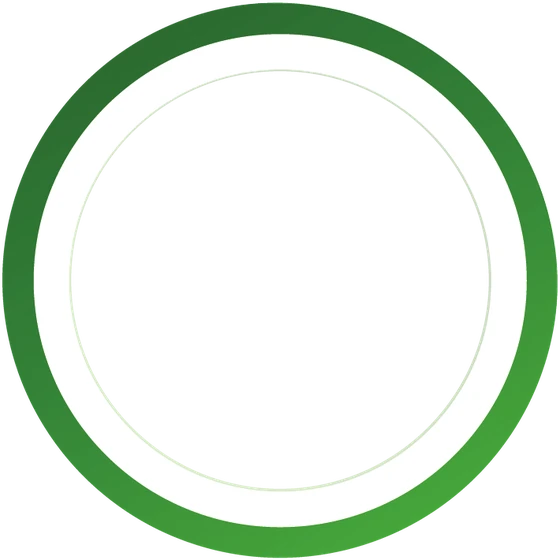
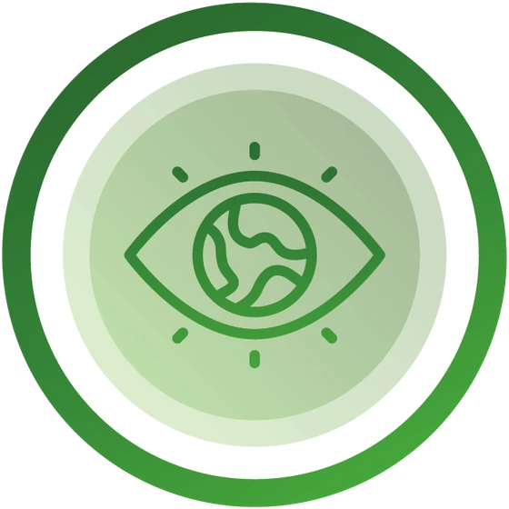
Pillar one
Climate actionon the frontlines
SIDS are leading global discourse & solutions on climate adaptation and resilience
SIDS are on the front lines of climate change. They have lost an estimated US$153 billion since 1970 due to climate-related hazards, important resources that could have been spent on development. At the United Nations Climate Summit in September 2019, the Alliance of Small Island States put forth the SIDS Package with cross-cutting priorities for systemic transitions to mitigate and adapt to climate change.
Despite the largely insignificant contribution of SIDS to global greenhouse gas emissions, at less than 1 percent, the SIDS Package highlights their collective determination to achieve net-zero emissions by 2050 and includes bold commitments to update nationally determined contributions (NDCs) and develop comprehensive strategies for lower greenhouse gas emissions, energy transformation and improved climate adaptation.
In line with the SIDS Package, the SIDS Offer promotes scaled-up climate action grounded in national development and climate priorities, under the overarching objective of accelerating achievement of the SDGs. The central focus of the offer’s climate pillar is on three interconnected accelerators of development: renewable energy transition, climate adaptation and resilience, and nature-based solutions.
To support energy sector transformation by 2030, UNDP is committed to assisting SIDS to increase the share of renewables in the energy mix and work towards 100 percent renewable energy production. To enhance climate resilience, UNDP supports the integration of adaptation measures into policy, planning and budgeting, across the national, subnational and local levels, and through national adaptation plans (NAPs) and NDCs.
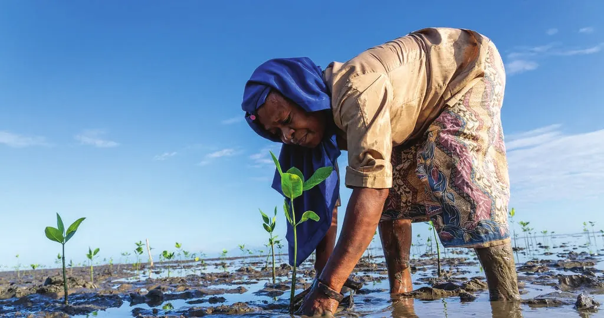
UNDP promotes decarbonized, resilient societies through scaled-up climate action across all SIDS.
UNDP has engaged with SIDS closely through its Climate Promise, assisting 28 to submit enhanced NDCs by November 2021. Most governments had integrated climate adaptation into national policy by 2022, but just over half of SIDS confirmed to have adopted an NDC implementation plan.
UNDP has supported SIDS to respond to ambitious climate goals through strategies, roadmaps and on-the-ground implementation. For example, Guinea-Bissau produced its updated NDC in 2021 with a target for reducing greenhouse gas emissions by 30 percent by 2030. It then drew on UNDP support to develop a multi-year roadmap for NDC implementation. Other recent policies include the Third National Communication, the National Action Plan for Renewable Energy, the National Action Plan for Energy Efficiency and the National Programme for Sustainable Access to Energy for All by 2030.
UNDP assisted Dominica in updating its NDC, submitted in July 2022 with more ambitious goals, including an emissions reduction target of 45 percent below 2014 levels by 2030; 100 percent renewable energy usage by 2030; a 10 percent reduction of hydrofluorocarbons emissions by 2030; and a 980 percent increase in carbon sequestration above 2018 in the land use, land use change and forestry sector.
Samoa completed its Low Carbon Development Strategy 2021-2030 and began reviewing its existing greenhouse gas abatement inventory, developed under the Climate Promise. With UNDP assistance, it is also implementing a project to improve the performance and reliability of renewable energy. In the Bahamas, through the Global Environment Facility (GEF) Small Grants Programme, UNDP administers grants for community renewable energy initiatives. Stepped-up consultations with the Government will identify resource mobilization strategies for further renewable energy deployment.
Climate action recommendations
To accelerate adoption of nature-based solutions, integrate coastal biodiversity protection with disaster mitigation initiatives and natural resource management to build resilient and sustainable infrastructure.
Nature-based solutions such as mangrove restoration, wetland preservation and reforestation offer low-cost and sustainable long-term solutions to protect lives, livelihoods and infrastructure from the effects of natural disasters, while simultaneously enhancing coastal marine ecosystem resilience and biodiversity. Increasing access to climate finance can help to scale up coastal protection, climate-resilient agriculture and fisheries, and sustainable tourism. These priorities can be advanced by supporting SIDS in integrating nature-based solutions and disaster risk reduction into broader national planning and frameworks.
Optimize resource management by supporting the integration of circular economy priorities, such as for the water supply and waste management, into national frameworks, planning and strategies.
Implementing a circular economy provides crucial opportunities for SIDS, especially for achieving sustainable climate action and inclusive blue economies by reducing reliance on imports, improving waste management and promoting social inclusivity. Governments must play a significant role in developing entrepreneurship and scaling up circular economy activities by providing finance and a supportive regulatory framework. They must also build enforcement mechanisms and address negative incentives impeding adoption of circular practices. Data science can play a key role in optimizing resource management and systems modelling of sustainable pathways.
Focus on renewable energy as an integrated approach to socioeconomic empowerment through its capacity to further self-dependence, climate resilience and economic diversification.
Access to renewable energy in SIDS offers more than just energy. It represents a path to self-dependence, climate resilience, economic diversification and improved quality of life. Equitable access to clean, sustainable, and reliable energy is at the intersection of climate action, blue economy, and digital transformation. Supporting distributed energy systems, grid assessment studies, energy storage and long-term plans can all help SIDS to reach the full potential of solar, wind, geothermal and marine energy. International support will be essential, as over half of targeted renewable capacity in SIDS is conditional on international support through financing, technical assistance, and capacity-building.
Pursue innovation in the utilization of AI and GIS for climate goals, including a priority of investment in their application disaster response and infrastructure, optimize sustainable resource utilization and monitor conservation progress.
Through GIS, SIDS can analyse and visualize their development potential in order to develop data-driven strategies for drafting policy, optimize resources effectively, and develop climate resilient infrastructure. It is vital to support MSDIs for ocean governance through data on bathymetry, geology, blue economy infrastructure, marine ecosystems, climate and oceanography. Community mapping and drone technologies can provide localized data on demographics, ecosystem services and improvements to socioeconomic models to inform policy and national strategies.
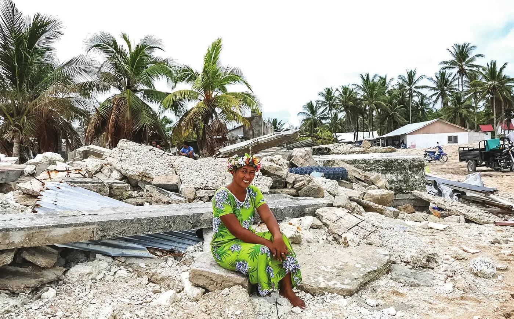
Photo: Silke von Brockhausen / UNDP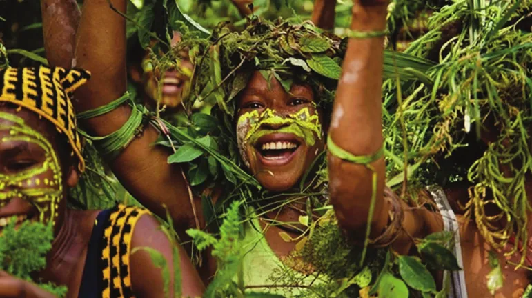
Photo: Elodie Van Lierde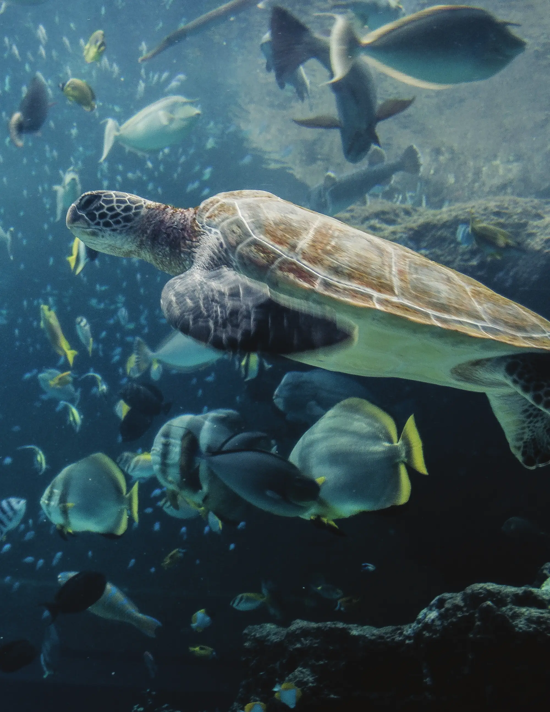
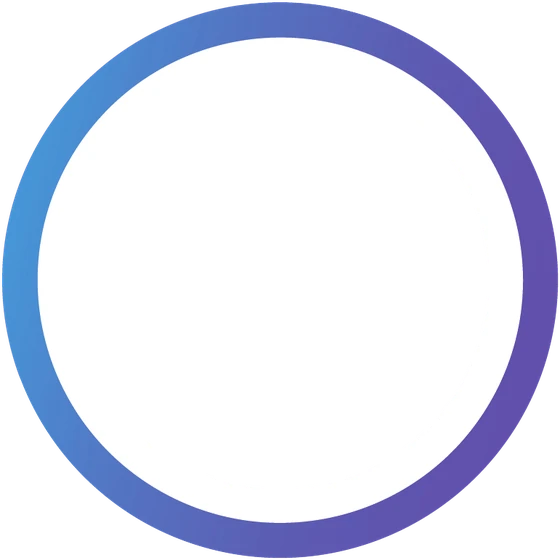
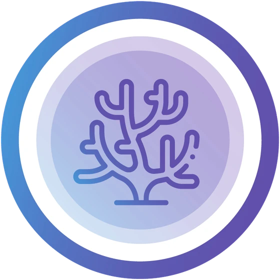
Pillar two
Innovating in theblue economy
For islanders, the ocean is arguably their most valuable asset.
The ocean regulates our climate, provides jobs and food for more than 3 billion people, and ferries 90 percent of the goods transported by the shipping industry. For islanders, the ocean is arguably their most valuable asset. As ‘large ocean States’, SIDS have tremendous potential for blue economies based on “the sustainable use of ocean resources for economic growth, jobs, and social and financial inclusion, with a focus on the preservation as well as the restoration of the health of ocean ecosystems.”
Sustainable blue economy opportunities cover a broad spectrum, including fishing and coastal tourism as well as aquaculture, ocean-based energy (e.g., waves, tides, wind and ocean thermal energy conversion), sustainable maritime transport, desalination, research and education, and marine genetic resources. The blue economy also encompasses non-market economic benefits such as from carbon capture and sequestration, coastal protection, cultural preservation and biodiversity.
Many SIDS have developed national ocean policies; a much lower share has established overarching blue economy strategies. Ensuring blue economy policies and strategies are fully integrated into national development plans and budgets is fundamental for progress and a target of UNDP’s Ocean Promise.
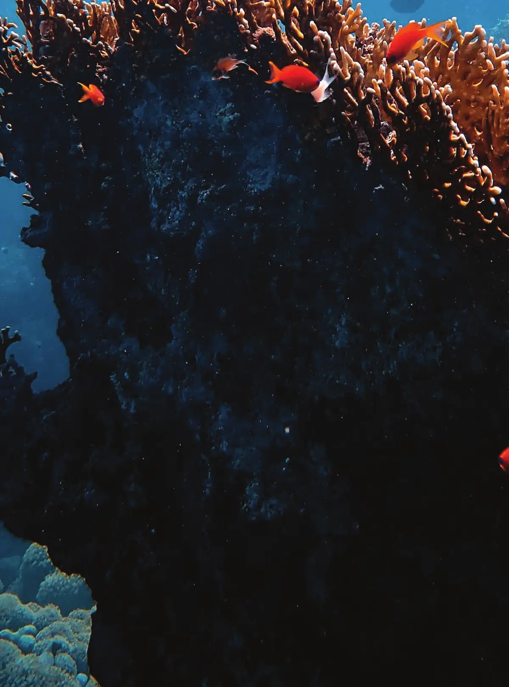
UNDP supports SIDS in developing blue economies through an integrated approach rooted in sustainable finance and development. The SIDS Offer aims to assist 20 to 30 countries in implementing national blue economy strategies and launching blue economy pilots, while mobilizing $30 million or more in new and additional blue economy grant finance. Significant technical, financial and capacity-building assistance support this process.
Through the SIDS Offer, UNDP assists in developing blue economy strategies that promote economic diversification, job creation and resilience. Support ranges from blue economy scoping studies, such as in Montserrat, to the development of detailed strategies, including in Guinea-Bissau. In 2022, Belize launched the Blue Economy Development Policy and Strategy and the Maritime Economy Plan to define the development pathways of a blue economy. Timor-Leste is finalizing a blue economy financing strategy. To raise awareness on the blue economy in Asia and the Pacific, UNDP published an action brief to guide transition.
So far, 17 countries have drawn on UNDP support to explore the promise of the blue economy; 78 percent of SIDS have conducted blue economy pilots to address core issues such as climate change adaptation, marine protected area expansion and management, and sustainable tourism.
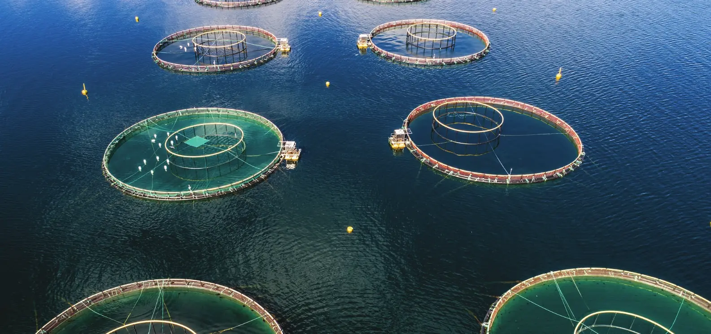
Blue Economy pilots have especially focused on expansion and management of Marine Protected Areas, climate adaptation and mitigation, and sustainable fisheries.
The Blue Economy pilots exemplify the cross-pillar approach of Rising Up for SIDS, with 62 percent incorporating digital innovations, such as vessel monitoring systems for the fishing industry in Suriname and the Pacific, and e-commerce in the Caribbean. Furthermore, 71 percent directly contribute to climate action. Half are helping SIDS improve access to finance.
Blue economy recommendations
Ensure that ocean health, blue economy policies and blue economy strategies are fully integrated into development plans and budgets and data driven, with a focus on ocean equity.
There is a need to scale up national awareness-raising on the blue economy potential for SIDS, especially in light of upcoming challenges, opportunities and multilateral environmental agreements. Support for natural capital accounting systems and the valuation of ecosystem services (including for climate change adaptation) could help in integrating marine health into development and fiscal policies and key development sectors. This can be supported by marine ecosystem valuation and ocean accounting which enables countries to go beyond GDP to measure the contribution of the ocean towards the SDGs. Engagement, frameworks, and policies at the regional level would support collective action and drive national processes.
Focus on improving the sustainability and inclusivity of existing sectors through on-the-ground projects while supporting the emergence of new blue economy sectors and innovation through research and capacity-building.
Support for projects that assess blue economy potential, prospects and pathways for each country should reflect their specific circumstances to encourage a diversification of blue economy opportunities, especially through the integration of digital, including in aquaculture, ocean-based energy, sustainable maritime transport, desalination, research and education and marine genetic resources. Pilot initiatives can support the reconfiguration of existing sectors such as tourism and fisheries through digital innovations, and contribute to blue carbon projects that bridge funding gaps in ocean protection while aiming to help expand the human capital and skills required for the blue economy transformation.
Support national financing plans tailored to national and regional circumstances and designed to stimulate investment in blue economy portfolios, including by accelerating bankable projects.
This will involve acceleration of the identification and dissemination of bankable projects and successful innovative financing models, including to leverage private capital, as well as the diversification of blue economy financing sources, towards bilateral avenues, philanthropies, etc. To improve access to finance and address limited capacity, it is important to streamline related processes and frameworks. Support for the new Multidimensional Vulnerability Index (MVI) could also enhance access to concessional financing.
Diversify blue economy opportunities especially through digital to reinvent existing sectors, including aquaculture, education and training, ocean energy, maritime transport and marine genetic resources.
The digital transformation of ocean industries involves leveraging technologies such as Internet of Things, AI and big data, and automation tools. For example, innovative monitoring systems can help optimize offshore energy production, while digital platforms can connect seafood producers with consumers, promoting sustainable sourcing and enhancing market access. Digital technologies enable the collection, analysis, and visualization of vast amounts of data from various sources such as sensors, satellites, and monitoring systems, providing valuable insights into ocean health, climate patterns, species distribution, and resource availability.
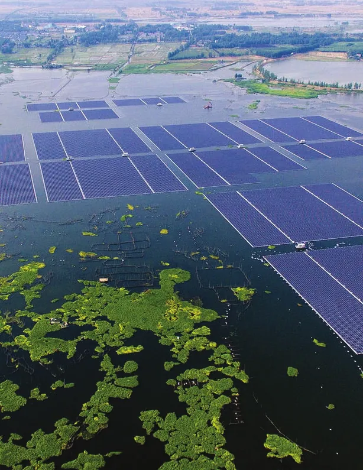
Photo: Imaginechina Limited / Alamy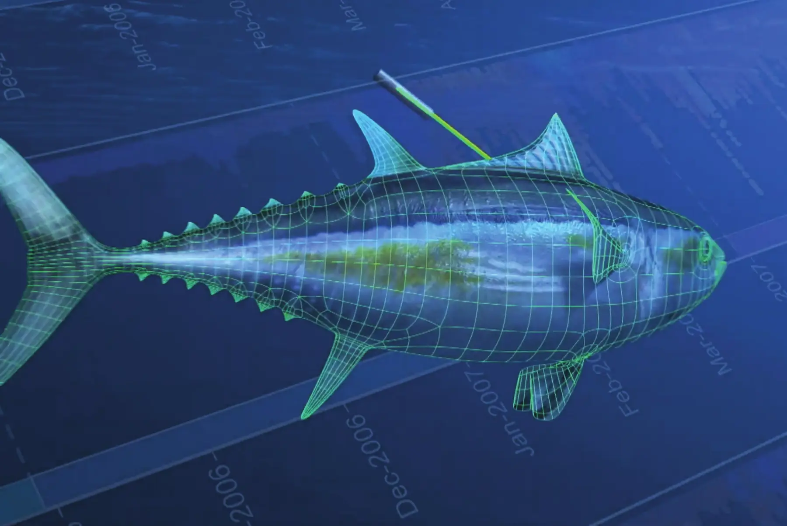
Photo: Ngad / Bigstock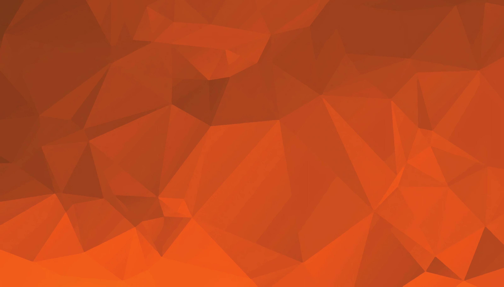
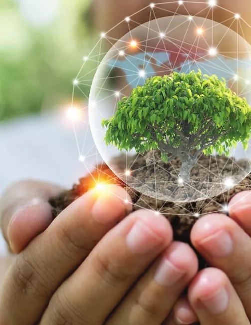
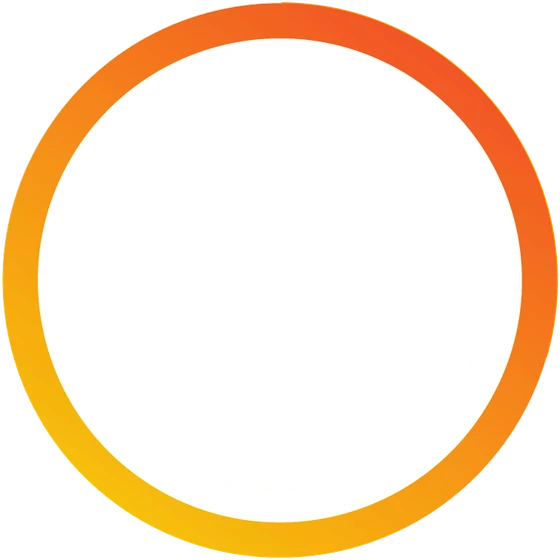
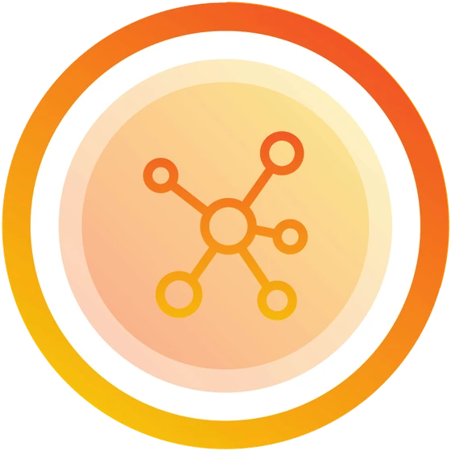
Pillar three
Acceleratingdigital transformation
Amid two years of digital transformation in two months, 73 percent of citizens in SIDS increased their use of digital technologies.
Throughout the COVID-19 pandemic, SIDS took opportunities to build their digital infrastructure. Amid two years of digital transformation in two months, 73 percent of citizens in SIDS increased their use of digital technologies, accelerating uptake of a proven driver of development.
SIDS could advance as frontrunners in using digital to speed sustainable development, build economies of scale and mitigate complex challenges, such as limitations due to remoteness. Many continue to struggle with two key issues, however: digital capacities and inclusive access. A widening digital divide is evident in limited online content in local languages, gaps in digital skills and inadequate broadband infrastructure, particularly in rural areas. Without proactive measures to narrow disparities, new technologies may exacerbate these.
The SIDS Offer assists countries in capitalizing on a digital age while managing constraints in capacity and access to technologies. It supports national digital strategies, the resilience of public institutions through greater digital capacity and digitalization, strengthened capacity for data use and access, and digital innovation linked with the blue economy and climate action.
This approach is particularly important in driving economic diversification, ensuring digital can translate into real and sustainable value by shaping broader development. Digital applications that feature throughout the SIDS Offer encompass e-commerce and social media as well as tools for digital financing and banking autonomy, the tracking of ecosystem health, improved climate forecasting, remote work opportunities and training resources to develop skills in the digital economy.
Many governments in SIDS are advancing legal, policy and regulatory frameworks for digital adoption and scaling up. These frameworks aim to integrate digital into existing systems and manage the risks of new technologies.
Digital strategies provide a vision and direction for digital transformation, and define roles and responsibilities to ensure a coordinated effort. About 78 percent of SIDS have national digital or ICT strategies, although 72 percent of these need updating. UNDP has also helped five SIDS develop national digital strategies, based on extensive public and expert consultations. In the Dominican Republic, the Digital Agenda 2030 became the first national strategy for digital transformation in the public sector. The Seychelles has elaborated the pillars of a digital strategy.
Taking a whole-of-society approach
Across SIDS, continuously improving affordability and accessibility have encouraged rapid digital transformation. Yet with significant shares of people left behind, particularly in rural or isolated islands, and among low-income women and children, and small and medium-sized enterprises, governments have a responsibility to ensure that digital transformation is equitable and comes with sufficient safeguards, including against risks of abuse and exclusion.
UNDP continuously encourages this process by helping to roll out foundational digital infrastructure aimed at catalysing human development, and by digitizing key public services to improve lives and increase the positive impact of government.
In the Cook Islands, digital agricultural tools and digital finance are helping to improve agricultural productivity and local agri-food system value chains, and increase disaster resilience and food security. This effort puts a particular emphasis on reaching women, children, youth and persons with disabilities. SIDS are also increasing the digital skills and expertise of their populations, including by exploring how digital could mitigate or reverse the ‘brain drain’.
Empowering youth with digital
Young people drive the digital age. In SIDS, they make up a fifth of the population. Many are excited by and actively engaging with technology, starting new businesses, learning new knowledge and skills, and building global connections. But sustainable and accessible digital infrastructure is not available to all, and risks of online harassment and cybercrime plague digital spaces. A significant share of young people in SIDS do not think they have skills to participate in the digital economy.
Recognizing that young people need chances to build skills, enhance employability and transition successfully into adult life, the UNDP’s SIDS Offer is specifically geared towards empowering young people to play leading roles. It supports policies to catalyse youth entrepreneurship and engagement and works with young people so they are prepared to contribute to and lead digital economies and societies. Momentum is growing, with 83 percent of SIDS surveyed reporting efforts to expand capacity and expertise in technology in part through decent jobs for young people.
Digital Readiness Assessments
Through Digital Readiness Assessments (DRAs), UNDP supports governments in rapidly engaging stakeholders and providing insights to determine relative strengths, weaknesses and entry points for collaboration. This is the first step towards developing a national digital transformation strategy and informs other digital initiatives. SIDS have been among the top adopters, with 16 countries having implemented the tool.
As SIDS explore the role of digital, adopting a whole-of-society approach is crucial in identifying entry points, policy priorities and technical interventions to best leverage the power of these technologies. Towards shaping broader development directions, regional approaches can define key digital priorities and deliver economies of scale, such as through shared procurement of digital technologies and regulatory harmonization that catalyzes national digital enterprises and entrepreneurs. Across SIDS, the affordability and accessibility of digital technology are continuously improving, and their economies have been quick to embrace paths to digital transformation.
Digital transformation recommendations
Support the development of National Digital Strategies to provide strong direction and coherence for digital priorities and programmes of the government, private sector, civil society, and other sectors.
SIDS face challenges due to significant data gaps, and in the discovery, access, analysis and interpretation of data. This requires support for accessing comprehensive and updated qualitative and quantitative data, and developing digital tools factoring in their specific geographic and socioeconomic considerations. Specific priorities are to ensure equity as AI and automation in the workforce expand, and to support governments and private sector firms in pursuing opportunities to enhance ocean monitoring, climate responses and digital systems through the scalability and efficiency of AI, and data infrastructure built on the traditional knowledge of oceans alongside modern monitoring tools.
Shape a whole-of-society effort around digital, engaging all sectors and communities - and ensure that no one is excluded, or left behind.
Governments and agencies should develop policies and regulations that explicitly address the protection of disadvantaged groups in digital ecosystems. These frameworks should address data privacy, security, and access rights, ensuring that the interests and rights of women, youth, and indigenous populations are safeguarded. Support for public-private sector collaboration should help develop strategies to guarantee equitable access to the benefits of digital while limiting risks such as to personal data and privacy. The starting point for developing such mechanisms is to support data protection impact assessments.
Position government as a catalyst for digital transformation in SIDS - recognising that, although a multi-sector and whole-of-society efforts, SIDS governments are central actors and leaders in digital.
Data is a key resource for evidence-based governance and paths to effective policymaking that accelerate resilience and adaptation. National statistics offices, ministries and other government bodies frequently lack the technical capacity to fully embrace the potential of data. They require support for strengthening their financial, technical and human resources in order to meet national data system requirements and establish ministry-specific capacity-building action plans. Advancing the digital readiness assessment to identify, structure and prioritize national digital transformation efforts and agendas, including data governance, can help to promote knowledge-sharing and research-based sustainable development.
Shape, build, and embed a robust and future-proof regulatory framework to ensure that digital leads to positive outcomes across economies and societies.
Building climate resilience and enhancing blue economies requires economic diversification. Digital capacity-building can support SIDS in accelerating industries such as e-commerce, digital payments and online education platforms. To strengthen local innovation economies, policies can stimulate competition and provide small and medium-sized enterprises with fair and open access to digital platforms. Microfinance programmes, venture capital funds and impact investment vehicles all improve access to a wider range of funding options to take advantage of their digital transformation.
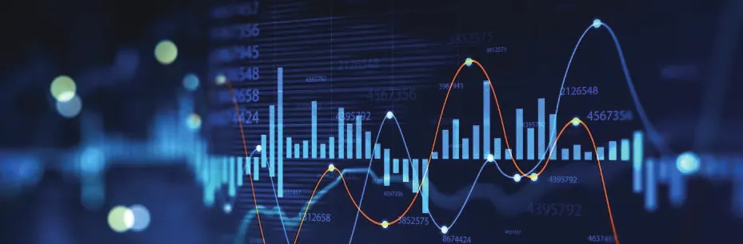
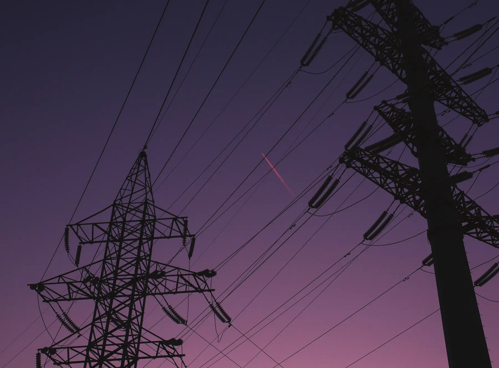
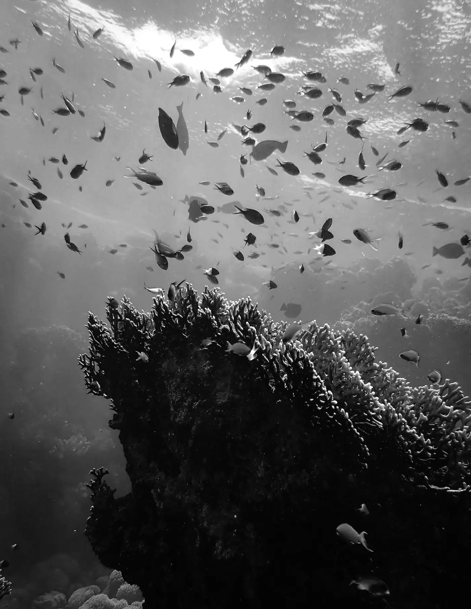
An integrated approach
The pillars of the SIDS Offer are meant to be integrated as key accelerators for enabling SIDS to take advantage of their greatest opportunities.
Integrated pillarsof development
By demonstrating priorities and progress crosscutting across each pair of pillars, this analysis explores the key ways that innovation and new development approaches emerge from the intersections of digital, blue economies, and climate action.
At the intersection of
Climate action &digital transformation
Digital transformation will continue to play a central role in adapting to and mitigating climate challenges, enabling SIDS to develop scalable solutions that leverage their greatest opportunities for development.
- Digital nations
- Renewable energy transition
- Digital agriculture & food systems
- Disaster early warning systems
- Spatial data for resource management
- Data-driven Nationally Determined Contributions & monitoring, learning and evaluation for adaption
- Empowering local youth talent
Already, SIDS are utilizing digital to reimagine their nations and infrastructure, transform their energy towards renewable, build robust disaster warning systems, and optimize resource use to align with their climate agenda and integrate with their ocean economies. SIDS have established ambitious climate targets in line with the Paris Agreement and 2030 Agenda, and these goals can only be effectively met if digital innovations are shared between SIDS to make use of advances in connectivity, spatial data infrastructure, AI, sustainable energy, and digital finance.
Digital nations
As sea levels rise due to climate change and threaten to make low lying atolls and islands unhabitable, SIDS are looking to utilize digital to radically reform their legal sovereignty and strengthen future international claims of land and sea right, including pushing beyond conventional methods of ‘e-government’ to create ‘Digital Nations’. A ‘Digital Nation’ is a complete reimagining of a country, beginning with digital-first public services and progressing to the creation of core digital assets for a digital economy and society, as well as the development of skills and processes to safeguard culture, ecosystems, and other assets using digital tools.
With over half of people in SIDS living in urban areas, for example, digital tools and innovation can shape ‘smart cities’ that are more livable, sustainable, inclusive and people-centred. Through digital public services, governments are providing more efficient services to businesses and enhancing public sector openness and accountability. Digitalized public services are also critical in government business continuity when natural disasters strike.
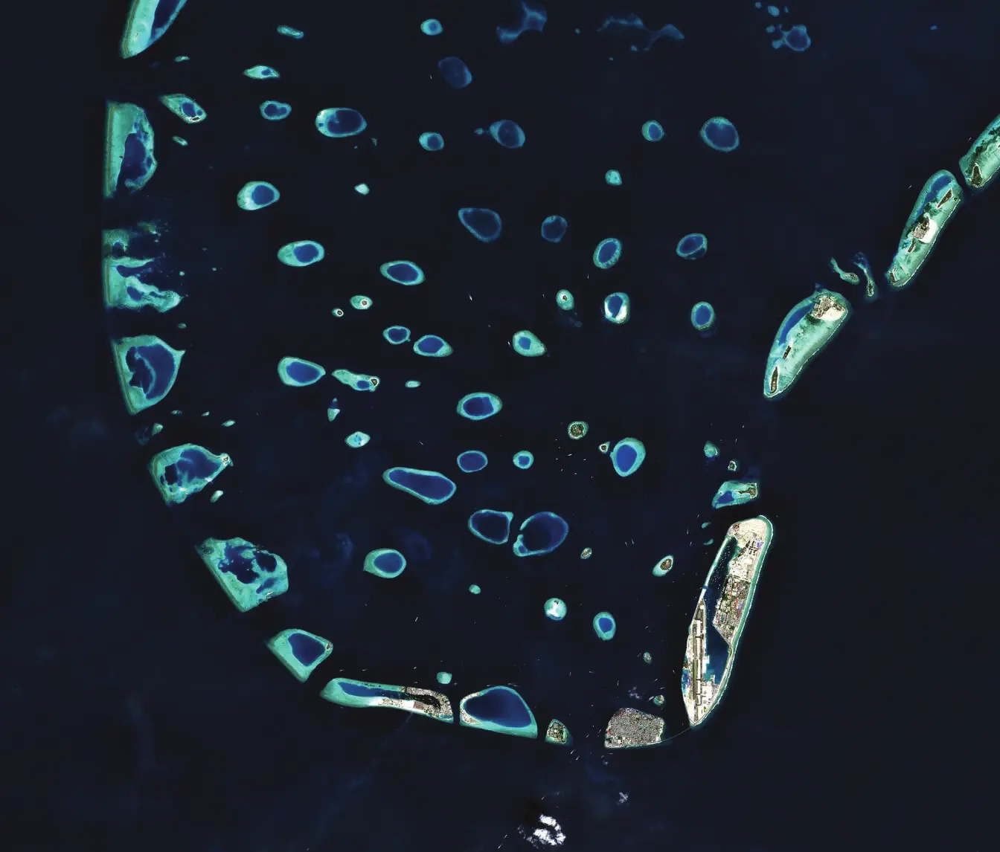
Photo: European Space AgencySpatial data for resource management
GIS is increasingly significant in natural resource management and climate-resilient spatial planning in SIDS. One of the most common applications entails mapping and monitoring areas and infrastructure vulnerable to climate risks, such as coastal erosion or flooding. Insights gained help strengthen defenses and adjust land use planning.
In the Maldives, UNDP supported the pilot of the LaamuInfo database tool for integrated local development planning. It draws together data from different sectors, such as land use, energy, agriculture and food security. Suriname improved the National Forest Cover Monitoring System to include spatial data on mangroves based on remote sensing and on-the-ground inventory.
Other applications of these technologies are in water resource management to monitor droughts and saltwater intrusion, and to track ecosystems critical to biodiversity preservation. Suriname has used UNDP support to improve the National Forest Cover Monitoring System, which now includes spatial data on mangroves based on remote sensing and on-the-ground inventory.
Renewable energy transition
More than ever before, renewable energy solutions are within reach through dramatic cost reductions, gains in technology and new business and financing models. Digital technologies, from smart grids to remote infrastructure monitoring, help SIDS increase and optimize renewable energy use. Energy is currently available in some form across 73 percent of SIDS yet the share of renewables in the energy mix crosses 25 percent in only 17 percent of countries.
UNDP partners with SIDS to improve access to renewable energy and accelerate the energy transition, such as by using minigrid technologies to expand electricity in rural and last-mile settlements in Comoros and Haiti. The potential for continued innovation is evident in Belize’s partnership with a German company to use sargassum seaweed for electricity. This offers greener energy and combats an invasive species with severe impacts on marine ecosystems, tourism and local economies.
A key challenge for achieving the energy transition in SIDS is to address existing investor risks that affect the financing costs and competitiveness of sustainable energy. Despite falling investment costs, SIDS face high financing costs that can dramatically affect the competitiveness of sustainable energy versus fossil fuel technologies. Financing costs often reflect a number of perceived or actual barriers and their associated investment risks. For instance, barriers in access to grids, lengthy and uncertain processes to issue permits, limited local supply of expertise or a lack of long-term price guarantees can increase the perceived risk for investors and therefore deter investments or increase financing costs.
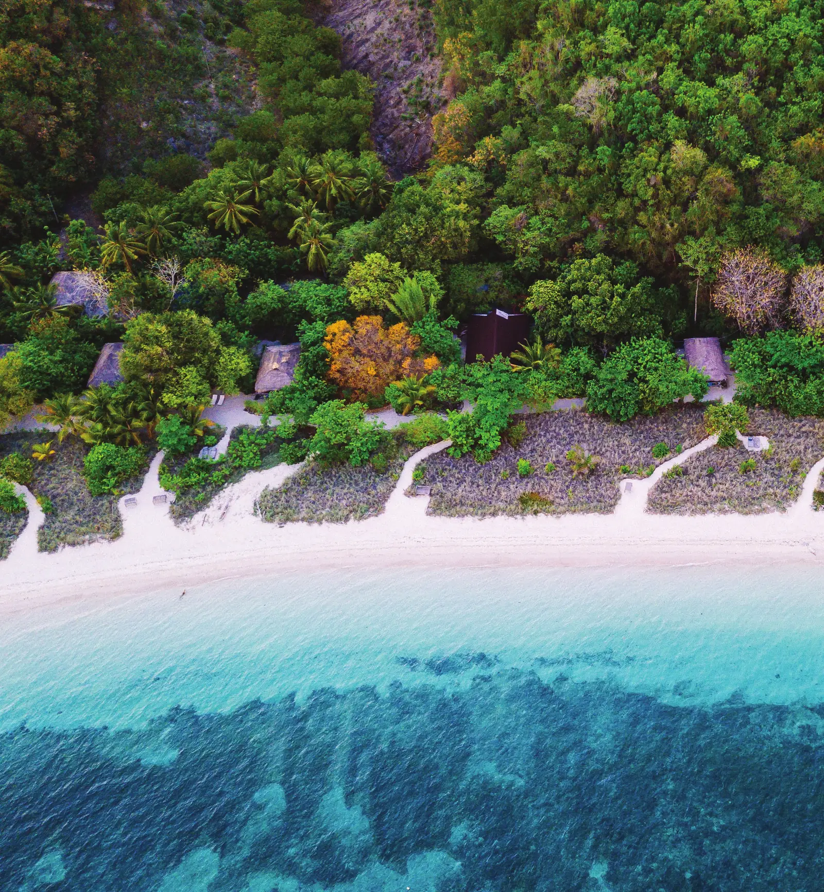
SIDS are placing a transition to sustainable energy at the forefront of their agendas. 89 percent of SIDS have announced new strategies and policies to increase renewable energy access.
Disaster early warning systems
Digital tools have made early warning systems easier to create and deploy, keeping more people safe from natural disasters. These systems are a top priority in SIDS and the SIDS Offer. According to the survey, 95 percent of SIDS have improved early warning systems. Nearly 90 percent prioritized early warning systems in their NDCs, and 70 percent have coordinated climate change adaptation and disaster risk reduction efforts.
In the Pacific, SIDS have used Microsoft’s Digital Earth Pacific AI to examine the consequences of extreme weather events on recovery, agriculture and water contamination. Caribbean SIDS are strengthening emergency response capabilities through a new disaster preparedness hub in Barbados, demonstrating the power of collaboration to overcome constraints of geography and limited financial resources.
Data-driven Nationally Determined Contributions
SIDS have some of the most ambitious NDCs yet the feasibility of these plans is lower than the global average. They have lower levels of financing and fewer measurable targets or provisions for monitoring and evaluation. Through the SIDS Offer, UNDP is helping to close these gaps, providing capacity-building and technical help with implementation, and financing and investment planning. It supports monitoring, reporting and verification systems to optimize mitigation measures. Grenada has established the Caribbean Cooperative Monitoring, Reporting and Verification Hub so that nations can exchange data to track their NDCs and increase climate ambition.
UNDP also assists in integrating adaptation priorities into national development planning and budgeting. Dominica, for example, became the first country in the world to implement a digital readiness assessment aimed at harmonizing essential elements of sustainable development while prioritizing climate goals, thereby expediting both recovery from recent crises and resilience to future ones.
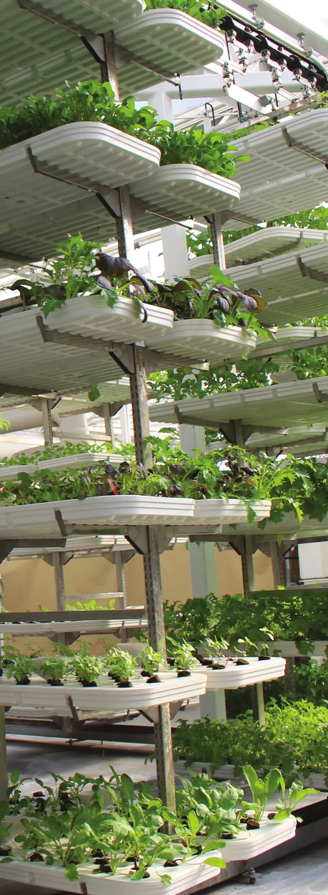
Photo: Michael RiveraDigital agriculture and food systems
The recent crises including the global pandemic have reduced agricultural production, food availability, and income, threatening SIDS’ food security and climate resilience. Urban and vertical farming have enormous promise to improve food security and resilience in SIDS, a potential underlined in UNDP’s SIDS Offer. Growing fresh agricultural produce on limited land—a constraint shared by all these countries—will increase local production and reduce reliance on imports. Singaporean innovators have pioneered a variety of urban agriculture methods, including rooftop farms, the integration of urban farms into existing buildings and enhanced greenhouses.
Non-traditional farming methods such as hydroponics, aeroponics and aquaponics can also boost productivity, alongside digital technologies such as the Internet of Things and AI. With UNDP support, Saint Lucia enhanced its agricultural supply chain with digital technology, raising productivity by increasing subsidies for particular products and fostering stable markets with agriculture intelligence information systems.
UNDP helps address critical challenges to the adoption of modern agricultural technologies, including high capital costs, gaps in professional expertise, limited youth participation and low digital literacy among farmers.
At the intersection of
Blue economy &digital transformation
Connecting the blue economy and digital transformation can enhance climate resilience, support economic prosperity and diversification, and redefine a sustainable relationship with the ocean.
- Fisheries monitoring
- Fishery supply chain
- Marine spatial data infrastructure
- Digital tourism
- Marine transport
In SIDS, fishing is a way of life, vital for livelihoods and food security. Digital technology is boosting the development of sustainable aquaculture, such as through sensors and monitoring systems to optimize feed and energy use, decrease waste and pollution, and improve fish health and growth. UNDP is also assisting SIDS to develop emerging sectors such as renewable marine energy and to sustainably strengthen the efficiency of existing industries, such as fishing, throughout the supply chain. These scalable innovations can improve SIDS’ economies and restore ocean health worldwide.
Fishery monitoring
Illegal, unreported and unregulated fishing is the largest danger to ocean ecosystems. SIDS are turning to technologically driven solutions to monitor catches, recognizing the need for transparency, accountability and sustainability. The Federated States of Micronesia, where fisheries comprise 9 percent of GDP, has used sensors to electronically monitor vessel fishing activities, achieving cost savings, more representative fleet coverage and enhanced location registration and greater fishing activity.
In the Western Pacific, UNDP has helped build capacities to manage and monitor systems to ensure the long-term conservation of tuna stocks. With funding from the UNDP Ocean Innovation Challenge, Mauritius plans to design a near real-time monitoring tool to identify illegal, unreported and unregulated fishing through satellite data processing.
Fishery supply chains
By leveraging digital across the fishery supply chain, SIDS can create more sustainable seafood businesses, amid mounting demand for ethically sourced seafood. Digital technology can improve traceability, availability and transparency, protecting the health of the ocean and the livelihoods of local fishing communities while expanding traditional markets. UNDP has worked with SIDS to use blockchain to enhance the tracking and monitoring of seafood exports, from catch to consumption. In Fiji, TraSeable records information about catches and supply chains, enabling buyers and consumers to authenticate the origin and sustainability of the seafood. The Maldives Fishermen’s Association is adopting blockchain for its tuna fishery.
UNDP also supports online markets to improve seafood supply chains, particularly for small-scale fishers and seafood producers to interact directly with buyers, circumventing long supply chains. Small-scale producers can establish new markets, boost profits and provide consumers with a wider selection of sustainably sourced seafood. Improvements in the productivity of seafood supply chains build on digital data analytics and platforms such FisheryProgress, which helps to uncover inefficiencies and identify improvements.
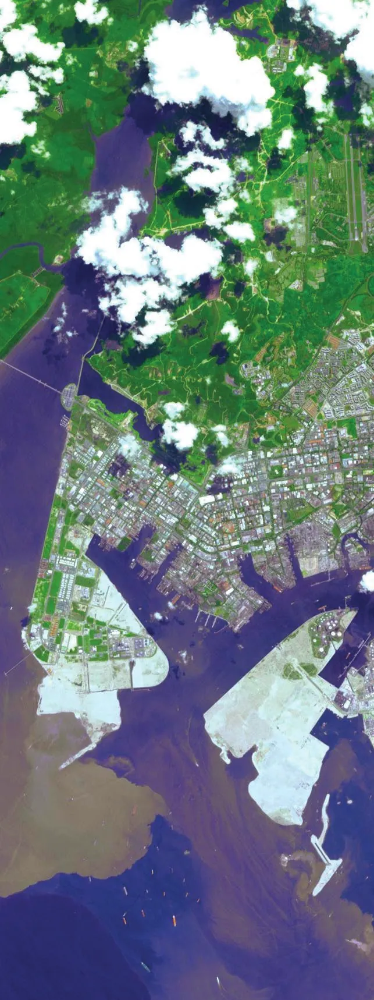
Photo: NASAMarine spatial data infrastructure
UNDP supports geographic mapping and marine spatial data infrastructure enabling SIDS to collect data related to bathymetry, geology, marine ecosystems, climate and oceanography. Such infrastructure can improve ocean governance by identifying areas of ecological importance as well as potential sites for renewable energy, tourism, maritime transportation and protective infrastructure. It can guide marine spatial plans that balance economic growth with environmental conservation, supporting an inclusive and resilient blue economy.
Most SIDS are now using spatial data to monitor ocean areas central to livelihoods and marine resources, including coral reefs. Innovations comprise the BlueBot project in Barbados, a product supported by the UNDP Accelerator Labs. It uses semi-autonomous underwater robotics to scan coral reefs with computer vision and AI.
Marine transport
Of the world’s 50 least connected economies, 37 are SIDS. Increasing maritime transport costs attributable to global supply chain issues has pushed up prices in SIDS at a rate five times higher than the worldwide average. Since import shipping is a lifeblood of many SIDS economies. Sustainable marine transport provides connectivity, trade and economic growth while protecting the health of the ocean and coastal ecosystems. It helps to minimize risks of food insecurity and enhance access to health care, education and other critical services.
SIDS can optimize maritime transport operations and reduce environmental impacts through digital tools to evaluate vessel performance, fuel consumption and emissions, and to monitor automatic identification systems. The Samoa Ports Authority, for one, applies data analytics to track and enhance shipping traffic and port operations.
Digital tourism
Digital advancements are helping SIDS to establish sustainable tourism, which protects and promotes healthy marine ecosystems, and generates economic growth, improved livelihoods, higher tourist satisfaction, and new markets and jobs.
Using virtual and augmented reality, for instance, tourists from anywhere in the world can explore coastal and marine environments without putting fragile ecosystems at risk. Virtual reality tours of coral reefs in the Maldives let visitors experience their beauty and diversity without damaging them. Guided nature excursions in the Seychelles use augmented reality so tourists learn more about local biodiversity and their impact on it.
Digital tools also help entrepreneurs and governments better manage tourism industries. The Sustainable Destination Dashboard, for example, is a data analytics platform in the Caribbean with information on visitor spending patterns, energy use and trash management. It allows tourism operators to find areas for improvement and reduce their environmental footprints.
At the intersection of
Blue economy &climate action
The climate and oceans are intricately intertwined, and therefore an integrated approach is essential to take advantage of SIDS’ ocean economies while adapting to and mitigating the effects of climate change.
- Combating ocean debris & pollution
- Integrated coastal zone protection, management & restoration
- Enabling innovative ocean renewables
Blue nature-based solutions in SIDS offer enormous potential to realize sustainable development, advancing progress on poverty, hunger, gender equality, economic growth and decent work. They also have the potential to provide at least one-third of the carbon mitigation required by 2030. An integrated approach to climate action and the blue economy can reduce greenhouse gas emissions, protect marine habitats and biodiversity, establish sustainable fisheries and improve adaptation for coastal communities and vulnerable populations.
Combating ocean debris and pollution
An estimated 10 million tons of debris enter the ocean annually, killing marine wildlife, endangering human health and harming those who rely on the ocean for a living. SIDS have been innovating their own solutions to waste management even as the world moves towards legally binding instrument on plastic pollution. For example, the ISLANDS initiative works with 33 SIDS to construct circular production systems and reduce hazardous chemicals, waste and marine litter.
Plastic waste recovery and buy-back centres in the Comoros have introduced innovative financial mechanisms that cut marine pollution while creating new economic opportunities for communities. Antigua and Barbuda has banned certain single-use plastics. With support from the GEF, in partnership with UNDP, Samoa Green Products Ltd. has become the first firm in Samoa to introduce green alternative products such as plates, bowls and baskets made from palm leaves. In the Bahamas, rapid assessments combine new data collection techniques driven by images to locate, categorize, and map marine debris.
Improving implementation of marine protected areas
Marine protected areas can conserve biodiversity and help mitigate climate change. Yet over 65 percent lack sufficient finance. To address this gap, the Caribbean Biodiversity Fund, with UNDP assistance, is establishing national conservation trust funds in Dominica, Grenada, Saint Lucia, and Saint Vincent and the Grenadines. In the Pacific, a partnership involving Fiji’s Beqa Adventure Divers, the Global Fund for Coral Reefs and the Joint SDG Fund is financing a scalable method to expand and diversify reef-positive activities that enhance livelihoods and local marine ecosystem conservation.
Regional approaches using ‘biological corridors’ to connect marine protected areas are gaining importance, reflecting meteorological shifts, economic and cultural needs, and advances in technology and finance, including those agreed at the 2023 Intergovernmental Conference on Marine Biodiversity of Areas Beyond National Jurisdiction.
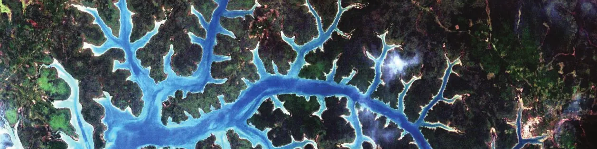
Ridge to Reef Programs: integrated coastal zone protection, management and restoration
Integrated climate adaptation strategies make links among terrestrial, coastal and marine ecosystems and measures to protect, manage and restore them. UNDP supports this aim through initiatives such as the Global Fund for Coral Reefs and the Ridge-to-Reef Programme. Around 1,147 community projects have used over $30 million to safeguard marine water and improve livelihoods. UNDP assistance encompasses sustainable partnerships and community-based, business-driven approaches, including to reef restoration and coral farming and nursery facilities.
In the Comoros, mangrove and coral reef restoration has been part of efforts to develop a national network of terrestrial and marine protected areas, with an emphasis on sustainable economic activities for communities affected by new regulations. Projects in Grenada and Saint Vincent and the Grenadines are unlocking multiple global and local benefits by bolstering the management of land, forest and reef ecosystems and biodiversity, especially within and around marine and terrestrial protected areas. In Cuba, UNDP has helped 19 municipalities pioneer integrated coastal management favouring environmental sustainability in the use of resources.
More than 20 SIDS have embraced Ridge-to-Reef projects to comprehensively address critical environmental challenges. Projects are strengthening marine protected areas through improved, representative and long-term strategies for local management. This increases the potential to protect threatened marine species and preserve natural capacities to withstand climate change. The Marshall Islands, where 95 percent of city dwellers are at risk of flooding, is taking bold steps through a Ridge-to-Reef project that amplifies community and ecological resilience to threats and degradation. Fiji plans to mitigate the negative impacts of land-based activities on maritime protected areas through integrated management plans comprising mangrove preservation, sustainable land use practices and the restoration of upstream watersheds.
The survey showed a significant integration of best practices from Ridge-to-Reef projects and related initiatives in national planning. Moving forward, increasing alignment with NAPs and NDCs will accelerate blue economies, improve resilience and support global targets for protecting biodiversity.
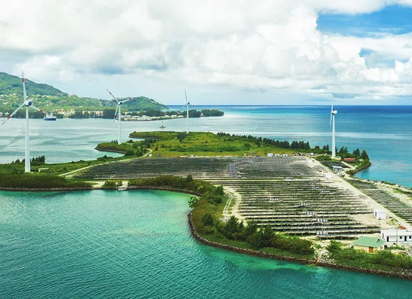
Enabling innovative ocean renewables
UNDP works with SIDS to increase renewable energy generation and efficiency. To reach national electrification targets, UNDP also mobilizes funding for specialized renewable energy and energy efficiency policies and demonstration projects. By delivering energy to other offshore blue economy enterprises, such as aquaculture, desalination and cooling, an intertwined hybrid renewable strategy can improve livelihoods and eliminate the need to import expensive fossil fuel.
Depending on the local environment, tidal energy, wave energy, current energy and ocean thermal energy are all viable forms of ocean energy calling for further investment. Offshore renewables like geothermal, floating solar PV arrays and high-capacity offshore wind turbines are also part of the emerging blue economy.
Bermuda and Tonga aim to adopt marine-based renewables to produce energy throughout the year and avoid the intermittent energy capabilities of other renewable energy sources. Mauritius and Barbados are building offshore wind farms, and Seychelles will bring online its first floating solar PV array at the end of 2023. Policy guidance has aided in the development of the Pacific Regional Framework on Energy Security, as well as national energy road maps and policies.
Cross-cutting enablersof development in SIDS
Cross-cutting pillars ofdevelopment in SIDS
Beyond the three key pillars of the SIDS offer, innovative finance and data are cross-cutting areas which are fundamental to building the foundations of progress. All three pillars of UNDP’s support are rooted in improving access to finance through innovative and traditional sources, in line with a call by SIDS in the follow-up to the SAMOA Pathway. Data-driven methods are key to implementation of innovations and in monitoring their success, and are therefore central to climate action, blue economy transformation, and are the language of digital transformation. Finally, partnerships are the heart of sustainable development, and the integrated approach to development is contingent upon the collaboration between stakeholders, countries, and regions.
Enabler one
Expandingaccess to finance
Throughout 2022, SIDS called for accelerated global action on the climate and oceans, galvanizing commitments to reduce emissions and preserve biodiversity. Striking limitations in finance remain, however. Many SIDS lack fiscal space, have limited domestic resource bases and face structural economic challenges exacerbated by chronic underfinancing and the COVID-19 pandemic. Moving forward depends on overcoming these obstacles.
Improved access to finance through innovative and traditional sources aligns with the follow-up to the SAMOA Pathway. Through its SIDS Offer, UNDP helps identify and develop appropriate financing solutions to accelerate economic transformation, enhance resilience to future shocks and support climate ambitions. It has mobilized funds through grants backing climate adaptation priorities such as water resources management, coastal resilience, food security, resilient livelihoods, early warning systems and climate information, among others.
Under the SIDS Offer, UNDP initially planned to mobilize at least $30 million in new and additional blue economy grant finance. This amount has already been exceeded, reaching $47 million from sources including the GEF, Green Climate Fund, Global Funds for Coral Reefs, Joint SDG Fund and bilateral funding. Leveraged finance includes two endorsed GEF International Waters Project identification forms to advance national blue economy strategic planning in the Caribbean Sea, North Brazil Shelf Large Marine Ecosystems, and all seven Atlantic and Indian Ocean SIDS.
UNDP is a founding partner of the Global Fund for Coral Reefs, which helps orchestrate blended finance initiatives that unlock private investment in commercially viable, coral-positive businesses. These benefit local communities in the Bahamas, Fiji and Papua New Guinea, among other countries. As diversified investment programmes, they create and access new market instruments that promote sustainable management, ensure corporate accountability, increase private finance to protect the ocean and catalyse local enterprises.
UNDP is the lead agency for the $89 million GEF-8 Blue and Green Islands Integrated Programme, the first of its kind specifically designed for SIDS. It aims to reduce ecosystem degradation, enhance the resilience of coupled socioecological systems and facilitate nature-positive development. UNDP’s BIOFIN initiative incentivizes governments and the private sector in SIDS to improve biodiversity outcomes by mobilizing national financing to conserve marine and coastal ecosystems.
Through the SIDS Offer, UNDP has begun helping countries navigate new opportunities from innovative finance, such as thematic bonds and mechanisms for risk insurance and impact investment. Fiji launched a sustainable bond framework in 2022 that will support the issuance of its first sovereign blue bond, focused on coastal protection, sustainable aquaculture, shipping and waste management. Cabo Verde issued its first blue bond on its sustainable finance platform, Blu-X. It will galvanize domestic, regional and global investment in the blue economy while diverting capital from industries responsible for sea-level rise, pollution and other transgressions against the ocean.
Barbados and Belize have announced blue bond projects to expand their blue economies as part of a debt-for-nature swap. Such swaps have attracted the interest of international institutions and SIDS aiming to reduce external debt while achieving development gains. Belize used a debt-for-nature swap to cut its debt by $364 million and elevated its sovereign credit rating.
Unless a swap includes a significant portion of a government’s debt as well as substantial relief, however, it will likely not be sufficient to bring a country back from the brink of insolvency. Comprehensive preventative debt restructuring may be required. Barbados offers an example of successful debt restructuring that moved its credit rating from SD to B-. It continues to emphasize fiscal consolidation and debt reduction backed by the Barbados Economic Recovery and Transformation plan. It also launched the Bridgetown Initiative, a call to reform the global financial system.
UNDP supports SIDS in managing debt and fiscal challenges through a number of avenues, including integrated national financing frameworks, a dedicated debt service offering and development finance assessments. It works closely with governments to invest in sustainable development based on a sound understanding of systemic risks and mitigation measures, and through a shift from reactionary to anticipatory approaches aimed at systemic solutions.
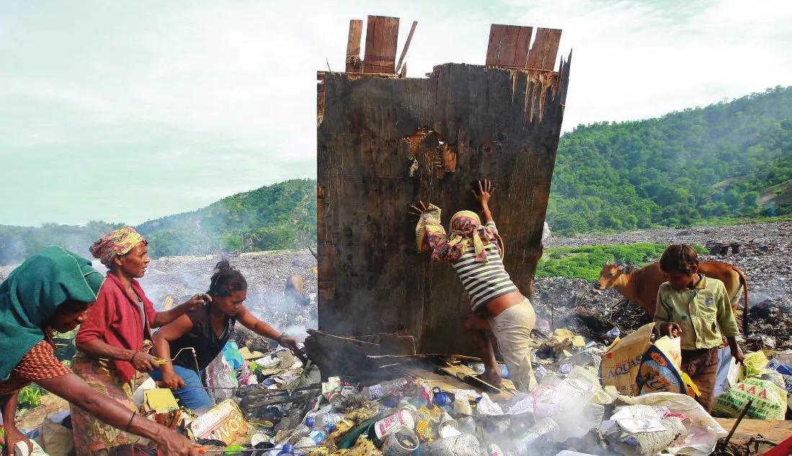
Loss and damage
SIDS and other developing countries have advocated financial mechanisms to address loss and damage from climate change for many years. This led to a long-awaited decision at global climate talks in 2022 to establish a fund for developing countries to avert, minimize and address loss and damage. UNDP Administrator Achim Steiner noted, “This represents a significant step forward in the global fight against the climate emergency.” He also emphasized, “A just transition to clean and sustainable sources of energy is critical if we are to reduce emissions and limit global heating to 1.5 degrees Celsius.”
Most SIDS primarily make use of traditional funding such as vertical funds and debt management, while innovative finance mechanisms such as Blue and Green Bonds remain underutilized.
Financing opportunities in SIDS are deeply linked to the climate and oceans. While most funds mobilized by UNDP still come through vertical funding mechanisms related to these issues, such conventional financing instruments are insufficient in reaching the level of finance that SIDS require to develop, particularly amid multiple crises. In general, innovative finance could be used more broadly, based on appropriate circumstances and learning from SIDS already applying these mechanisms. A combination of blended finance, technical assistance and ongoing support for implementation capacity will to some extent accelerate key climate, energy, SDG and resilience-related solutions.
Technical support and resource mobilization are the key types of support most requested by COs and MCOs from UNDP at the global and regional levels.
Towards a Multidimensional Vulnerability Index
While SIDS face severe structural challenges that were worsened by the pandemic, their middle- or high-income status typically limits eligibility for concessional financing. Only 7 of 38 SIDS that are United Nations Member States are least developed countries with broader access to concessional finance. This situation has resulted from assessing SIDS mainly based on economic indicators that do not fully account for multiple sources of vulnerability.
In December 2020, in resolution 75/215, the United Nations General Assembly called on the United Nations to develop a multidimensional vulnerability index to help middle-income countries, including many SIDS, to create fiscal space to overcome structural and external vulnerabilities and build resilience to shocks. This could inform new ways of determining eligibility for development finance.
As a contribution to this process, UNDP proposed an index with 11 indicators reflecting economic, geographic, environmental and financial risks and vulnerabilities masked by purely income-based criteria. The analysis proves that all but five SIDS are more vulnerable than their income levels suggest. Applying the index would mean that SIDS that are not least developed countries would have their long-term external public and publicly guaranteed debt funded at the same average interest rate as the least developed countries. This could save close to 1.5 percent of gross domestic product (GDP) annually.
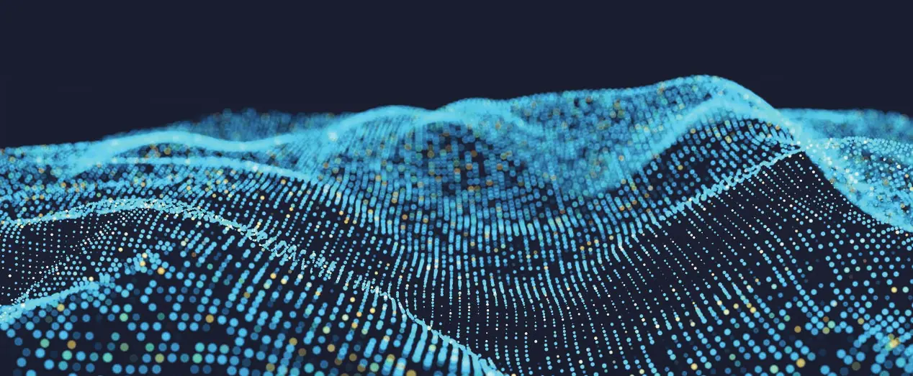
Enabler two
Unleashing SIDS’data revolution
The value of data in enabling SIDS’ transformation and recovery continues to grow as governments, development agencies and private sector firms integrate advancements in data availability and analytic methods to automate and scale up climate and ocean actions. Investing in data and digital infrastructure can reinforce agility and innovative thinking, and generate new development opportunities.
Foundational data infrastructure
UNDP’s SIDS Offer emphasizes foundational data infrastructure to enable the sharing of innovations among and within SIDS. Elements include national open data portals like those in Jamaica and Papua New Guinea, spatial data infrastructure and data communities. Each of these make all other data innovations possible.
Data infrastructure must be scalable, interoperable, secure and sustainable, and governments, private organizations and civil society should work together to invest in it and promote its use. UNDP helps broker these links. It emphasizes accelerated support for national statistical offices to bring more data into policymaking and enable integrated analyses. New tools, including AI and increasingly available high-resolution satellite imagery, will allow national statistical offices to transcend previous limitations due to low capacity.
As with any raw resource, the value of data comes from processed forms, through analytics and applications. Unlike most resources, once created, data can be duplicated and shared without any loss. Open data therefore offer great opportunities for SIDS to simultaneously advance data-driven policymaking and catalyse private sector activity. Ramping up open data initiatives and data transfers among ministries, national statistical offices and other organizations calls for adjusting mandates and incentives to coordinate data production and exchange, sustain collaboration and reduce redundancy.
Data-driven decision-making
Across the SIDS, evidence-based policymaking requires comprehensive data and digital tools tailored specifically to their needs. UNDP supports decision-makers in defining investments required for high-quality data collection. It helps reinforce financial, technical and human resources to fulfil national data system requirements and develop ministry-specific capacity-building action plans. Creating units to create, process and share data is one strategy. UNDP also assists capacity-mapping covering research and governmental agencies, and evaluates data-sharing and availability.
UNDP offices indicated a diverse set of existing data sources used for their work, mostly centered on public records, administrative data and surveys, with little citizen-generated or open private sector data.
Funding, technical capacities, resource access, fundamental data availability and infrastructure gaps are barriers to data use in SIDS. Only 70 percent of UNDP offices reported partially digitized public data. A lack of subnational data to analyse interregional variability and the condition of vulnerable groups hampers capacities to construct local and subnational public policies to address equity and social inclusion concerns.
COs/MCOs primarily source data from documents and public records, administrative data, and surveys.
AI & machine learning
Machine learning plays a key role in monitoring progress towards meeting the SDGs and the objectives of the SAMOA Pathway in SIDS. Using satellite and street-level images alongside machine learning techniques can predict poverty; examine child mortality rates and women’s access to health care, education, clean water and sanitation; and classify land cover. Cutting-edge examples of using machine learning and AI exist in fishery management, coral reef management and ocean pollution clean-up, all of which are significant to SIDS as large ocean States. As machine learning and AI mature, SIDS have a unique role in innovative applications of data science in sustainable development.
Many innovations, especially in using geospatial intelligence and machine learning for marine spatial data, have evolved in SIDS, as they continue leading the world in climate-related action and advocacy. In Fiji, the Commonsensing Project is using satellite data to analyse and evaluate baseline conditions and to measure climate-related changes over time in aspects such as deforestation, sea-level rise, flooding, land degradation, fisheries, coastal protection and food security. Neural networks and multivariate statistical techniques are used to forecast the Effective Drought Index in Fiji.
SIDS in the Caribbean have deployed machine learning techniques, such as fully convolutional neural networks, logistic regression, linear support vector machines and Naïve Bayes, to identify deforestation. A national flood forecasting system in Guyana autonomously collects available rainfall observations and feeds them into a machine learning hydrologic model to forecast floods. One key area for AI is marine data, where rapid innovations in data collection include underwater or surface vehicles to collect data at depths and resolutions considered impossible only a few years ago, and constellations of satellites collecting environmental and bathymetric data.
While innovations in cloud technologies, machine learning and analytic techniques offer enormous potential, they must be matched by local technical capacity-building as well as a larger analysis of the threats and challenges that accompany any AI endeavour.
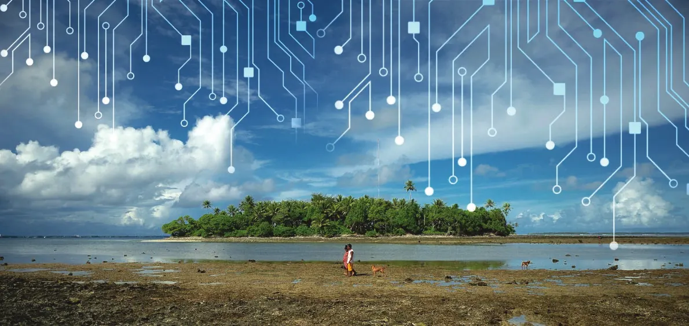
The UNDP SIDS Data Platform
The UNDP SIDS Data Platform is a freely available digital tool for accelerating development in SIDS by providing policymakers, research institutions, country offices, and development partners with access to updated, standardized, and comprehensive data. There are three main types of data within the SIDS data platform, including country-level indicators, geospatial data, and data on the UNDP portfolio of projects and investment across the SAMOA Pathway priorities and SDGs. For each data type, custom interfaces have been developed to visualize, analyze, and export these data, all available in four languages. Additionally, machine learning models have been developed to allow socio-economic and environmental analyses through interactive interfaces for testing modelling approaches for filling in gaps in databases.
Enabler three
Advancing inter-agency andpublic-private partnerships
Most issues critical to sustainable development elude the management of any single sector or actor. Collaboration within and among SIDS countries, regions and stakeholders as well as across development organizations can coordinate and align policy, innovation, technical capacity and resources. Each of the three SIDS regions has different priorities for partnership and inter-agency work, as shown in Figure 8. A common issue, however, is a lack of additional resources to invest in strategic interventions and seize emerging opportunities.
Inter-agency work and partnership have potential to expand especially in the pillars of the SIDS Offer, as well as Biodiversity Conservation and Disaster Risk Reduction
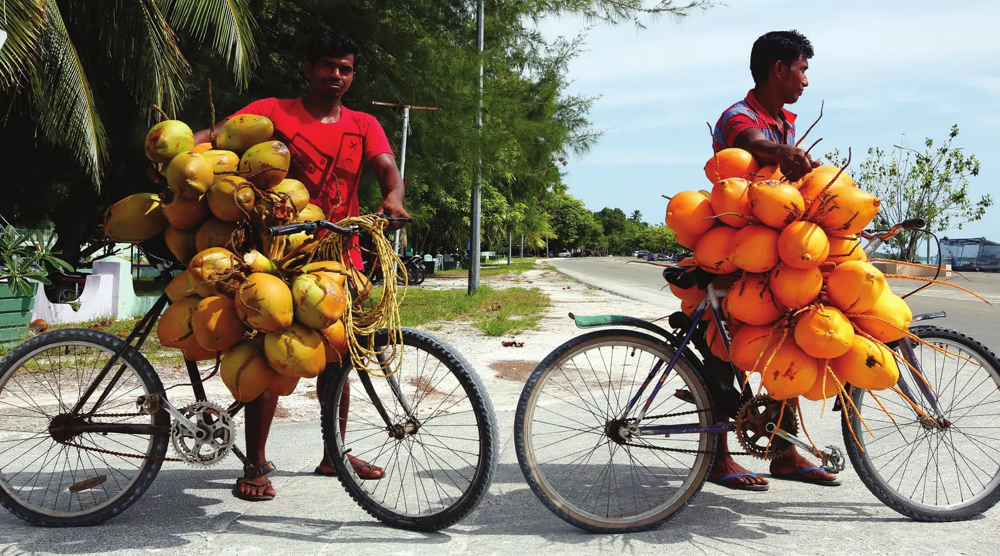
Public-private partnerships (PPPs) can support SIDS in solving challenges by aligning the strengths of the public and private sectors. They can facilitate access to finance and private investment, enhance economic growth and job creation, and establish new markets. The legal and regulatory environment, quality of project design, and alignment of public and private interests all determine success. UNDP assists SIDS governments in developing and strengthening policy and regulatory frameworks for PPPs. This includes measures enabling private sector investment, streamlining administrative processes, and establishing transparent and accountable governance mechanisms. It may involve training government officials, strengthening project management skills, and facilitating knowledge sharing among SIDS. UNDP also helps attract private sector investment, such as by facilitating access to blended finance options, innovative financing mechanisms and risk-sharing arrangements making projects more attractive to private investors.
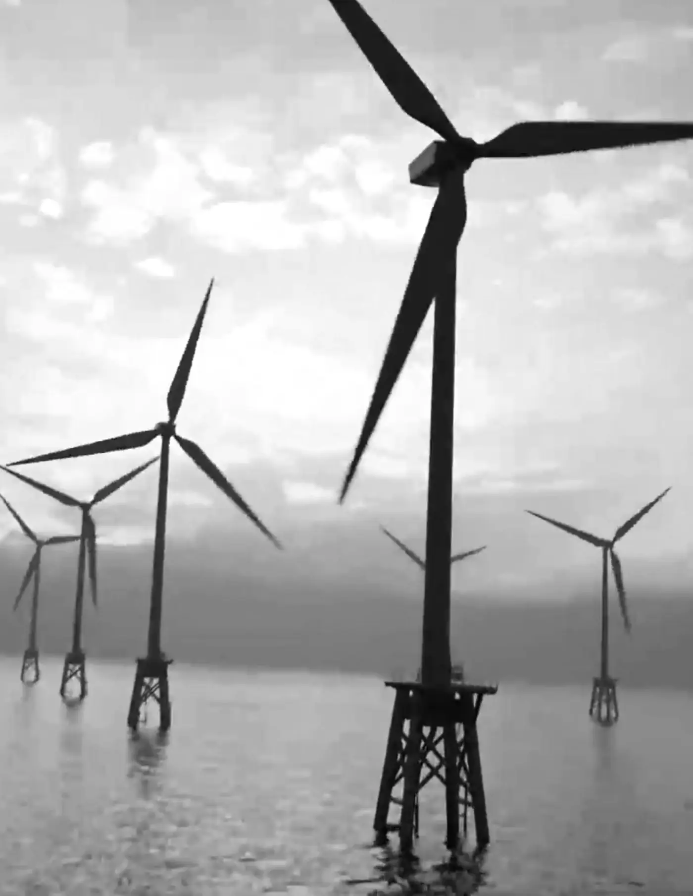
Looking forward for SIDS’development pathway
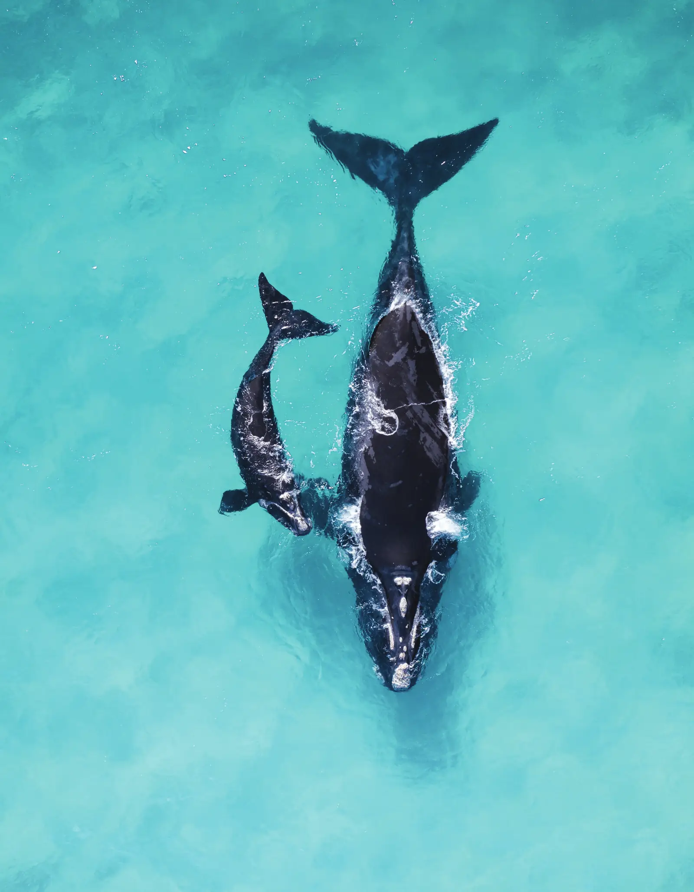
Conclusion
As we come to the close of the SAMOA Pathway, SIDS will prepare to align with a new set of priorities for an ambitious and transformative next decade of development. In the run-up to the Fourth International SIDS Conference, to be held in Antigua and Barbuda in 2024, this report offers a sense of new paths to a greener and bluer future.
By harnessing their inherent strengths, embracing innovation and building on their collective progress, SIDS are well positioned to overcome their challenges. They have consistently demonstrated their ambition and willingness to lead by example, taking committed actions to ensure the safety and well-being of both people and planet, on land and in the ocean. Integrated solutions are underway and will help SIDS overcome structural vulnerabilities and thrive despite increasingly complex and interconnected challenges.
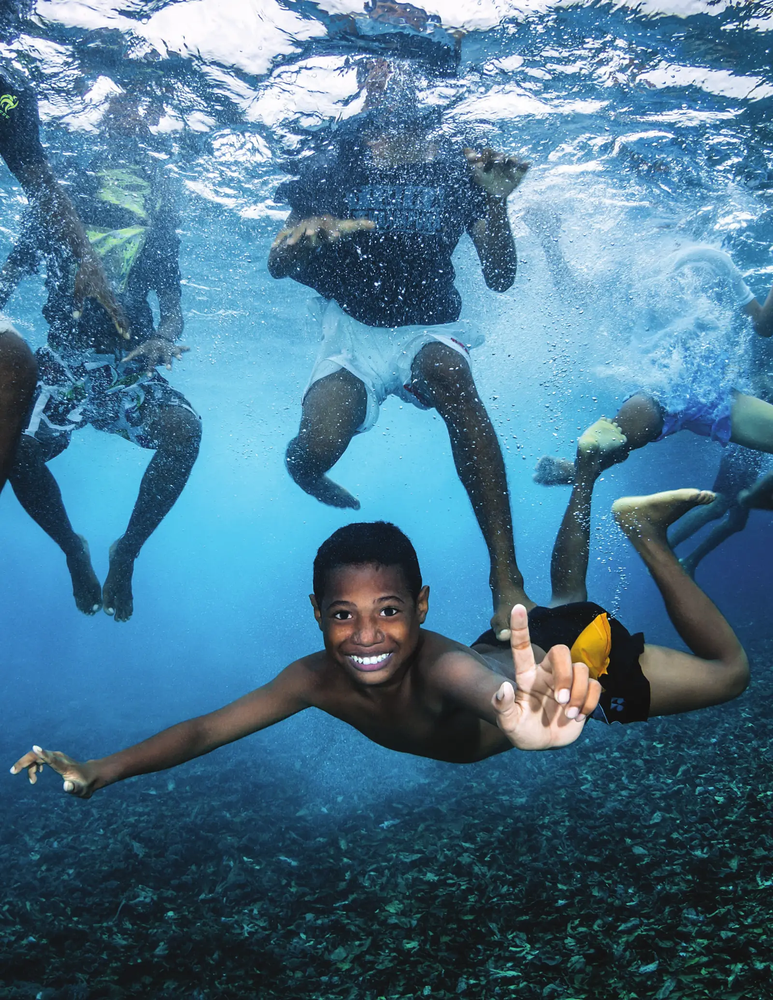
Rising Up for SIDS is UNDP’s response to a time of uncertainty and complexity—but also hope. Aligned with the objectives of the SAMOA Pathway and the 2030 Agenda, it continues to offer agile, efficient support through integrated solutions targeting systemic challenges. UNDP serves as an innovator, advocate, partner and integrator, but always with SIDS at the helm of their own development solutions.
The ‘triple C’ of crises in the past few years—climate, conflict and COVID-19—have given a glimpse of the future if we do not act today. They showed how intricately interconnected people and planet are, a message that SIDS have advocated for many years. The global challenge is to embrace development that achieves human well-being while accounting for the climate emergency and avoiding the further depletion of natural capital. The upcoming decade offers a chance to focus on innovative, interconnected actions for SIDS to realize ever more inclusive and equitable development.